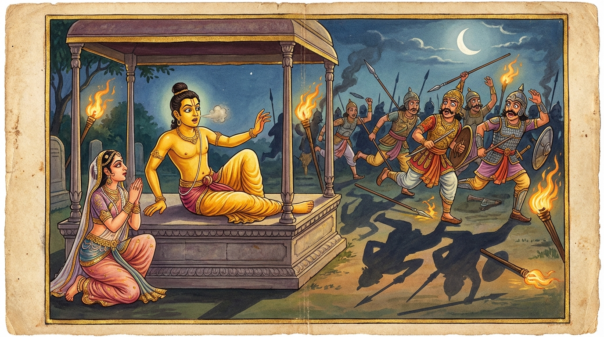

6. අසිලක්ඛණ ජාතකය (126)
“තථෙවෙකස්ස කල්යාණං” යන මේ දේශනාව බුදුරජාණන් වහන්සේ ජේතවනාරාමයෙහි වැඩ වාසය කරන සමයෙහි, කොසොල් රජුගේ කඩු ලකුණු ශාස්ත්රය දන්නා බමුණකු අරබයා වදාළ සේක. ඔහු කම්මල්කරුවන් විසින් රජු වෙත කඩු ගෙනා කල්හි කඩුව සිඹ බලා කඩු ලකුණු පවසයි. ඔහු යමකුගේ අතින් අල්ලසක් හෝ ලාභයක් ලබයි ද, ඔහුගේ කඩුව “ලක්ෂණ සම්පන්නය, මංගල කරුණුවලින් යුක්තය” යි කියයි. යමකුගේ අතින් ලාභය නොලබයි නම් ඔහුගේ කඩුව “අවලක්ෂණය” යි ගරහයි. ඉක්බිති එක් කම්මල්කරුවෙක් කඩුවක් තනා, එහි කොපුව තුළට ඉතා සියුම් මිරිස් කුඩු දමා රජු වෙත ගෙන ආවේය. රජතුමා බමුණා කැඳවා “කඩුව පරීක්ෂා කරව” යි කීවේය. ඔහු කඩුව කොපුවෙන් ඇද සිඹින විට නාසයට මිරිස් කුඩු ඇතුළු වී කිඹිසීමට උවමනාව ඇති විය. ඔහුට කිඹිසෙනවාත් සමඟම නාසය කඩු මුවහතේ වැදී දෙකට කැපී ගියේය. මෙසේ ඔහුගේ නාසය කැපුණු බව භික්ෂු සංඝයා අතර ප්රසිද්ධ විය. ඉක්බිති එක් දිනක් දම් සභාවෙහි රැස්වූ භික්ෂූහු මේ ගැන කථාවක් මතු කළහ. “ඇවැත්නි, රජතුමාගේ කඩු ලකුණු කියන්නා කඩු ලකුණු පරීක්ෂා කරමින් සිටියදී නාසය කපා ගත්තේය” යනුවෙනි. බුදුරජාණන් වහන්සේ එහි වැඩමවා “මහණෙනි, මේ වන විට කවර කථාවකින් යුක්තව හුන්නහු දැ?” යි විමසා, ඒ කථාවෙන් යුක්ත යැයි දැනගත් පසු, “මහණෙනි, මේ බමුණා කඩු සිඹ නාසය කපා ගත්තේ දැන් පමණක් නොව, පෙරත් මේ විපතට පත් වූයේය” යි වදාරා අතීත කථාව ගෙනහැර දැක්වූ සේක.
පෙර බරණැස් නුවර බ්රහ්මදත්ත රජු රජ කරන සමයෙහි ඔහුගේ කඩු ලකුණු කියන බමුණකු විය. සියලු තොරතුරු වර්තමාන කථාවේ දැක්වූ ආකාරයටම සමානය. රජතුමා ඔහුට වෙදෙකු ලබා දී නාසයේ අග සුවපත් කරවා, ලාකඩවලින් බොරු නාසයක් කරවා දී නැවතත් ඔහු උපස්ථායකයෙකු ලෙස තබා ගත්තේය. බරණැස් රජුට පුතකු නොවීය. එක් දියණියක් හා බෑණා කෙනෙක් පමණක් වූහ. රජු ඒ දෙදෙනාම තමන්ගේ භාරයේම ඇතිදැඩි කළේය. ඔවුන් එකට වැඩෙද්දී ඔවුනොවුන් අතර ප්රේම සම්බන්ධයක් ඇති විය. රජතුමා ද ඇමැතියන් කැඳවා “මගේ බෑණා මේ රාජ්යයේ උරුමකරුය. එබැවින් දියණිය ඔහුටම සරණ පාවා දී ඔහුගේ අභිෂේකය සිදු කරමි” යි කියා පසුව නැවත මෙසේ සිතුවේය: “මගේ බෑණා කෙසේ වෙතත් මගේ ඥාතියෙකි. එබැවින් ඔහුට වෙනත් රජ කුමරියක ගෙනැවිත් දී අභිෂේක කර, මගේ දියණිය වෙනත් රජ කෙනෙකුට සරණ පාවා දෙන්නෙමි. මෙසේ කිරීමෙන් අපට බොහෝ ඥාතීන් ඇති වන්නාහ. රාජ්යයන් දෙකකම අපම ස්වාමිවරු වන්නෙමු.” හෙතෙම ඇමැතියන් සමඟ සාකච්ඡා කොට “ඒ දෙදෙනා වෙන් කිරීම වටී” යැයි තීරණය කර, බෑණා වෙනත් මාලිගයක ද, දියණිය තවත් මාලිගයක ද වාසය කරවීය. ඔවුන් සොළොස් හැවිරිදි වියට පත් වූ පසු ඔවුනොවුන් කෙරෙහි දැඩි ප්රේමයෙන් බැඳුණාහ.
රාජ කුමාරයා “කවර උපායකින් මාමාගේ දියණිය රජ මාලිගයෙන් පිටතට ගෙන්වා ගත හැකි වේදැ”යි සිතමින් සිටියදී, “එක් උපායක් ඇතැ” යි සිතා මහා යක්දෙස්සියක් කැඳවා ඇයට දහසින් බැඳි මල්ලක් දී “මා විසින් කුමක් කළ යුතුදැ?” යි විමසීය. ඇය “දරුව, මා විසින් යමක් කරන්නේ නම් එහි අසාර්ථක බවක් නැත; කිසියම් කරුණක් කියා මගේ මාමා ලවා රජ කුමරිය මාලිගයෙන් පිටතට ගෙන්වා ගත හැකි පරිදි කටයුතු කරන්නැ” යි කුමරු කීවේය. එවිට ඈ මෙසේ කීවාය: “ස්වාමීනි, යහපති. මම රජු වෙත ගොස් මෙසේ කියමි. ‘දේවයන් වහන්ස, රජ කුමරියට අරක් ගත් කාලකණ්ණි යක්ෂයෙක් ඇත. මෙපමණ කලක් ඔහු ඉවත්ව ගියේ නැත. මම රජ කුමරිය අසවල් දවසේ රථයකට නංවාගෙන, ආයුධ ගත් පුරුෂයන් ද සමග මහත් පිරිවරින් සොහොනට ගොස්, නාවන්නට සකස් කළ පීඨිකාවට යටින් ඇති සොහොන් ඇඳෙහි මළ මිනියක් හොවා, ඇඳ උඩ රජ කුමරිය තබා සුවඳ දිය කළ එකසිය අටකින් නහවා කාලකණ්ණි අමනුෂ්යයා පලවා හරින්නෙමි’ යි කියා රජ කුමරිය සොහොනට පමුණුවන්නෙමි. නුඹ අප එහි යන දවසේ අපට කලින් මිරිස් කුඩු ස්වල්පයක් රැගෙන, ආයුධ ගත් ඔබේ සේවකයන් විසින් පිරිවරා ගනු ලැබ, රථයට නැඟී සොහොනට ගොස් රථය සොහොන් දොරටුවෙහි එක් පසෙක තබා, ආයුධ ගත් පිරිස සොහොන් වනයට යවා, තමා සොහොනෙහි නහන පීඨිකාවට ගොස් මළ කෙනෙකු මෙන් යටිකුරුව වැතිර සිටින්න. මම එහි පැමිණ නුඹට ඉහළින් ඇඳක් අතුරුවා රජ කුමරිය ඔසවා එම ඇඳෙහි නිදි කරවන්නෙමි. නුඹ ඒ මොහොතේ මිරිස් කුඩු ටිකක් නාසයට දමා දෙතුන් වරක් කිඹිසින්න. නුඹ කිඹිසූ විට අපි රජ කුමරිය අතහැර පලා යන්නෙමු. ඉක්බිති ඔබ අවුත් රජ කුමරියගේ හිස සෝදා නහවා, තමාත් හිස සෝදා නා, ඇය රැගෙන තමාගේ නිවසට යන්න.” කුමාරයා “යහපති, මෙය ඉතා අගනා උපායකි” යි එය පිළිගත්තේය.
ඈ ගොස් රජුට ඒ කරුණ දැන්වූවාය. රජතුමා එය පිළිගත්තේය. රජ දියණියට ද ඒ බව රහසින් දැන්වූ අතර, ඈ ද ඊට කැමති වූවාය. ඇය මාලිගයෙන් නික්මෙන දවසේ කුමාරයාට සංඥාවක් දී මහත් පිරිවරින් සොහොනට යද්දී, ආරක්ෂක භටයන්ට බිය ඇති කිරීම සඳහා මෙසේ කීවාය: “මා රජ කුමරිය ඇඳෙහි තබන මොහොතේම ඇඳ යට සිටින මළ මිනිසා කිඹිසිනු ඇත. කිඹිස ඇඳ යටින් නික්මී යමකු පළමුව දකින්නේ ද ඔහුම බිල්ලට ගනු ඇත. එබැවින් ඉතා ප්රවේශම් වන්න.” රජ කුමරා පළමුව ගොස් යක්දෙස්සිය කියූ පරිදිම එහි වැතිර සිටියේය. මහා යක්දෙස්සිය රජ දියණිය ඔසවාගෙන නාවන පීඨිකාව වෙත යමින්, “බිය නොවන්නැ” යි කුමරියට සංඥා දී ඇඳ මත තැබුවාය. ඒ මොහොතේ කුමාරයා මිරිස් කුඩු නාසයට දමා කිඹිසියේය. ඔහු කිඹිසිනවාත් සමගම මහා යක්දෙස්සිය රජ කුමරිය අතහැර මහ හඬින් කෑගසමින් සියල්ලන්ටම පළමුව පලා ගියාය. ඇය පලා ගිය විට එක් අයෙක්වත් එහි රැඳී සිටීමට සමත් නොවුණි. ගත් ගත් ආයුධ එතැනම දමා සියල්ලෝම පලා ගියහ. කුමාරයා කතිකා කරගත් පරිදි සියල්ල සිදු කොට රජ කුමරිය රැගෙන තමාගේ නිවසට ගියේය.

යක්දෙස්සිය ගොස් ඒ කරුණ රජුට සැළකළාය. රජතුමා “ස්වභාවයෙන්ම ඇය මා විසින් ඔහු වෙනුවෙන්ම පෝෂණය කරන ලද්දකි. එය කිරිබතට ගිතෙල් දැමුවාක් මෙන් මැනවින් ගැළපුණේය” යි සතුටින් පිළිගෙන, පසුකලෙක බෑණාට රාජ්යය පවරා දී දියණිය අගමෙහෙසිය කළේය. හෙතෙම ඇය සමඟ සමඟියෙන් වසමින් ධර්මානුකූලව රාජ්යය කළේය. අර කඩු ලකුණු කියන බමුණා ද ඔහුගේම උපස්ථායකයා විය. එක් දිනක් ඔහු රජුට උපස්ථාන කිරීමට පැමිණ හිරු රැස් වැටෙන තැනක සිටගෙන සිටින විට, ලාකඩ දියවී බොරු නාසය බිම වැටුණේය. හෙතෙම ලජ්ජාවෙන් බිම බලාගෙන සිටියේය. එවිට රජතුමා ඔහුට සිනාසෙමින්, “ඇදුරුතුමනි, නොසිතන්න. කිඹිසීම නම් එක් අයෙකුට යහපත් වෙයි, තවත් කෙනෙකුට අයහපත් වෙයි. ඔබ කිඹිසීම නිසා නාසය කපා ගත්තේය. අපි වනාහි කිඹිසීම නිසා මාමාගේ දියණියත් ලබාගෙන රාජ්යයට ද පත්වීමු” යි පවසා මේ ගාථාව වදාළේය:
“එලෙසින්ම එය එකෙකුට යහපතකි;
එලෙසින්ම එය තවෙකෙකුට නපුරකි.
එබැවින් සියල්ල යහපත් නොවේ;
සියල්ල නපුරු ද
නොවේ.”
එහි “තථෙවෙකස්ස” යනු ‘තදෙවෙකස්ස’ (එයම එකෙකුට) යන්නයි. මෙය තවත් පාඨයකි. දෙවැනි පදයේත් අර්ථය මෙම ක්රමයටම දත යුතුය.
මෙසේ හෙතෙම මේ ගාථාවෙන් ඒ කරුණ ගෙනහැර දක්වා, දානාදී පින්කම් කොට කම් වූ පරිදි මියගොස් පරලොව ගියේය.
බුදුරජාණන් වහන්සේ මේ දේශනාව පවත්වා, ලෝක සම්මතය පරිදි යහපත හා අයහපත ඒකාන්ත නොවන බව ප්රකාශ කොට ජාතකය නිමවා වදාළ සේක. “එකල කඩු ලකුණු දන්නා බමුණා නම් දැන් මේ කඩු ලකුණු දන්නා බමුණාම විය. බෑණා වූ රජතුමා නම් මම ම වෙමි.”
අසිලක්ඛණ ජාතක වර්ණනාව හයවැනියි.